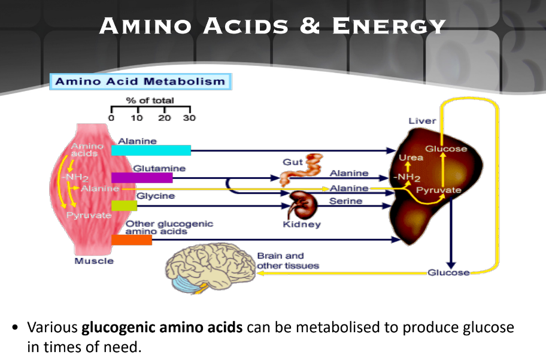
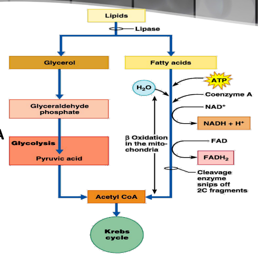

Alternative Passway
Deals with too much glucose and too low glucose
Amino Acid for Energy (glucose-Alanine Cycle)
Amino Acid Alanine can be converted to glucose & vice versa.
Useful when Protein are sufficient but Saccharides are in short supply
However, Protein can yield less Energy than lipids or saccharides, so they are metabolized as the last resort in starvation

Lipolysis
Glyceral enters Glycolysis as PGAL & Fatty Acid enters Kreb's Cycle as Acetyl CoA
Occurs only when Insulin Action falls to low level (Blood Sugar insufficient)

Back